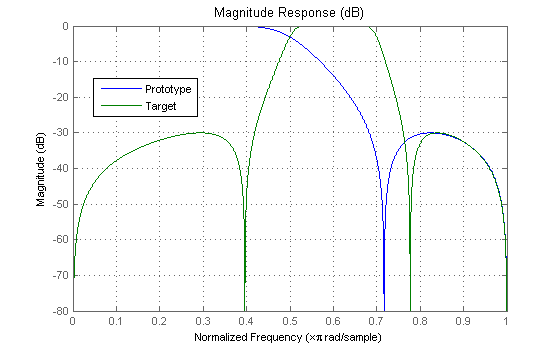

This demonstration shows example usage of the suite of frequency transformations available in the Filter Design Toolbox.
Author(s): Dr. Artur Krukowski
First design the prototype halfband lowpass filter. Then apply Lowpass-to-Lowpass Transformation to change its cutoff frequency from 0.5 to 0.05:
[b, a] = ellip(3, 0.1, 30, 0.409); [num, den] = iirlp2lp(b, a, 0.5, 0.05); hfvt = fvtool(b,a,num,den); legend(hfvt, 'Prototype', 'Target'); set(hfvt, 'Color', [1 1 1])
Note that this and all other transformations can be applied to DFILT objects as well. For example the above can be done equivalently with objects as follows:
hprototype = dfilt.df2(b,a); htarget = iirlp2lp(hprototype, 0.5, 0.05); set(hfvt, 'Filter', [hprototype, htarget]); legend(hfvt,'Prototype','Target');
First design the prototype halfband lowpass filter. The Lowpass-to-Highpass Transformation is then applied to change its cutoff frequency from 0.5 to 0.8:
[b, a] = ellip(3, 0.1, 30, 0.409); [num, den] = iirlp2hp(b, a, 0.5, 0.8); set(hfvt, 'Filter', [dfilt.df2t(b,a), dfilt.df2t(num,den)]); axis([0 1 -80 0]); legend(hfvt,'Prototype','Target');
First design the prototype halfband lowpass filter. The Lowpass-to-Bandpass Transformation is then applied to change convert the lowpass filter into a bandpass filter with band edges at 0.5 and 0.7:
[b, a] = ellip(3, 0.1, 30, 0.409); [num, den] = iirlp2bp(b, a, 0.5, [0.5,0.7]); set(hfvt, 'Filter', [dfilt.df2t(b,a), dfilt.df2t(num,den)]); axis([0 1 -80 0]); legend(hfvt,'Prototype','Target');
First design the prototype halfband lowpass filter. The Lowpass-to-Bandstop Transformation is then applied to change convert the lowpass filter into a bandstop filter with band edges at 0.2 and 0.4:
[b, a] = ellip(3, 0.1, 30, 0.409); [num, den] = iirlp2bs(b, a, 0.5, [0.2,0.4]); set(hfvt, 'Filter', [dfilt.df2t(b,a), dfilt.df2t(num,den)]); legend(hfvt,'Prototype','Target');
First design the prototype halfband lowpass filter. The Lowpass-to-Multiband Transformation is then applied to convert the lowpass filter into a two passband filter with edges at 0.1 & 0.3 in band one, and 0.7 & 0.8 in band two:
[b, a] = ellip(3, 0.1, 30, 0.409); [num, den] = iirlp2mb(b, a, 0.5, [0.1,0.3,0.7,0.8]); set(hfvt, 'Filter', [dfilt.df2t(b,a), dfilt.df2t(num,den)]); axis([0 1 -80 0]); legend(hfvt,'Prototype','Target');
Adding a mobility parameter 'stop' to the call to IIRLP2MB allows to change the character of the target filter. The passands become stopbands, and vice versa.
[b, a] = ellip(3, 0.1, 30, 0.409); [num, den] = iirlp2mb(b, a, 0.5, [0.1,0.3,0.7,0.8],'stop'); set(hfvt, 'Filter', [dfilt.df2t(b,a), dfilt.df2t(num,den)]); legend(hfvt,'Prototype','Target');
First design the prototype quarterband lowpass filter. The Real Shift Transformation is done to shift the cutoff from 0.2 to the new frequency 0.4. The rest of response of the filter is shifted accordingly:
[b, a] = ellip(3, 0.1, 30, 0.18); [num, den] = iirshift(b, a, 0.2, 0.4); set(hfvt, 'Filter', [dfilt.df2t(b,a), dfilt.df2t(num,den)]); axis([0 1 -80 0]); legend(hfvt,'Prototype','Target');
First design the prototype halfband lowpass filter. The Multipoint Transformation is applied that accurately places the left edge of the prototype filter passband at 0.2 and the right edge of the prototype filter passband at 0.4:
[b, a] = ellip(3, 0.1, 30, 0.409); [num, den] = iirlp2xn(b, a, [-0.5,0.5], [0.2,0.4]); set(hfvt, 'Filter', [dfilt.df2t(b,a), dfilt.df2t(num,den)]); legend(hfvt,'Prototype','Target');
First design the prototype halfband lowpass filter. The Complex Bandpass Transformation converts the prototype filter into a complex bandpass filter with the passband edges at 0.2 and 0.4:
[b, a] = ellip(3, 0.1, 30, 0.409); [num, den] = iirlp2bpc(b, a, 0.5, [0.2,0.4]); set(hfvt, 'Filter', [dfilt.df2t(b,a), dfilt.df2t(num,den)]); axis([-1 1 -80 0]); legend(hfvt,'Prototype','Target');
First design the prototype halfband lowpass filter. The Complex Bandstop Transformation converts the prototype filter into a complex bandstop filter with the passband edges at 0.6 and 0.7:
[b, a] = ellip(3, 0.1, 30, 0.409); [num, den] = iirlp2bsc(b, a, 0.5, [0.6,0.7]); set(hfvt, 'Filter', [dfilt.df2t(b,a), dfilt.df2t(num,den)]); axis([-1 1 -80 0]); legend(hfvt,'Prototype','Target');
First design the prototype halfband lowpass filter. The Complex Multiband Transformation is then applied to convert the real lowpass filter into two band filter with passband edges at -0.5 & -0.4 in band one, and 0.6 & 0.8 in band two:
[b, a] = ellip(3, 0.1, 30, 0.409); [num, den] = iirlp2mbc(b, a, 0.5, [-0.5,-0.4,0.6,0.8]); set(hfvt, 'Filter', [dfilt.df2t(b,a), dfilt.df2t(num,den)]); axis([-1 1 -80 0]); legend(hfvt,'Prototype','Target');
First design the prototype halfband lowpass filter. The Complex Multipoint Transformation then accurately places the left edge of the prototype filter passband at 0.2 and its right zero crossing, from 0.7168, precisely at 0.4:
[b, a] = ellip(3, 0.1, 30, 0.409); [num, den] = iirlp2xc(b, a, [-0.5,0.7168], [0.2,0.4]); set(hfvt, 'Filter', [dfilt.df2t(b,a), dfilt.df2t(num,den)]); axis([-1 1 -80 0]); legend(hfvt,'Prototype','Target');
First design the prototype lowpass filter with cutoff at 0.2. The Complex Shift Transformation then rotates the whole response of the prototype filter by shifting the right band edge of the prototype filter from 0.2 to 0.5:
[b, a] = ellip(3, 0.1, 30, 0.18); [num, den] = iirshiftc(b, a, 0.2, 0.5); set(hfvt, 'Filter', [dfilt.df2t(b,a), dfilt.df2t(num,den)]); axis([-1 1 -80 0]); legend(hfvt,'Prototype','Target');
The Hilbert Transformation is a special case of the complex rotation in the frequency domain, that is the response of the prototype filter is rotated 90 degrees (PI/2) anticlockwise. In the example the halfband lowpass prototype filter is used. Its right edge is rotated by 0.5 in order to reach 1.0:
[b, a] = ellip(3, 0.1, 30, 0.409); [num, den] = iirshiftc(b, a, 0.5, 1.0); set(hfvt, 'Filter', [dfilt.df2t(b,a), dfilt.df2t(num,den)]); axis([-1 1 -80 0]); legend(hfvt,'Prototype','Target');
The inverse Hilbert Transformation is a special case of the complex rotation in the frequency domain, that is the response of the prototype filter is rotated 90 degrees (PI/2) clockwise. In the example the halfband lowpass prototype filter is used. Its right edge is rotated by 0.5 in order to reach 0.0:
[b, a] = ellip(3, 0.1, 30, 0.409); [num, den] = iirshiftc(b, a, 0.5, 0); set(hfvt, 'Filter', [dfilt.df2t(b,a), dfilt.df2t(num,den)]); axis([-1 1 -80 0]); legend(hfvt,'Prototype','Target');